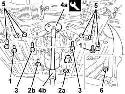
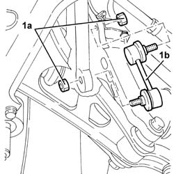
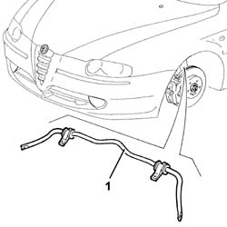
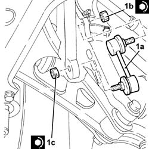
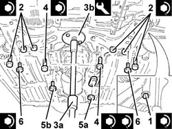

4410c10 front suspension stabilizer bar - r+r - check wheel geometry separately
- Path
- Procedures > 44 SUSPENSION AND WHEELS > 4410 FRONT SUSPENSION > 4410C stabilizer bar and anchorage struts > 4410c10 front suspension stabilizer bar - r+r - check wheel geometry separately
- Kind
- repair procedure (removal / refitting; the operation number is the code)
- Applies to
- all engines; all production periods
- Interactive page
- https://sloeber94.github.io/elrnDB-a147/en/#/3025327
Applies to: all engines; all production periods
 Removing
Removing
 Refitting
RefittingPosition the vehicle on the ramp.
Ensure that the ignition key is in the OFF position, then disconnect the negative battery terminal (-).
 | Name | Connector |
|---|---|---|
- | Battery |
Proceed with removal 4450B12 front or rear wheels (two) - r+r .
Applies to: engines: 2.0 TS, 3.2 V6, 1.9 JTD 8V, 1.9 JTD 16V; all production periods
Proceed with removal 7055B54 under-engine guard - r r .
Applies to: engines: 1.6 TS; all production periods; only with equipment: 103 CV
Proceed with removal 1072C44 exhaust manifold heat shield on bulkhead - r+r .
Proceed with removal 1080B62 catalytic converter - r + r .
Applies to: engines: 1.6 TS, 2.0 TS; all production periods; only with equipment: 120 CV
Proceed with removal 1072C44 exhaust manifold heat shield on bulkhead - r+r .
Proceed with removal 1080B40 catalytic pre-converter - r r .
Applies to: engines: 1.9 JTD 8V; all production periods
Proceed with removal 1076B50 exhaust pipe attachment to engine - r + r .
Applies to: engines: 1.9 JTD 16V; all production periods
Proceed with removal 1076B70 exhaust pipe between pre-catalytic converter and catalytic converter - r r .
Applies to: engines: 3.2 V6; all production periods
Proceed with removal 1076B82 left exhasust pipe between catalytic preconverter and converter r r .
Proceed with removal 1076B84 right exhaust pipe between caralytic preconverter and converter r r .
Applies to: engines: 3.2 V6; all production periods
Only for the GTA version, unscrew the bolts and remove the underbody reinforcements.
1. Undo the bolts securing the antiroll bar to the front suspension crossmember.
2. Undo the bolts (2a) and the nuts (2b) fixing the gear lever and handbrake lever mount.
3. Undo the bolts fixing the power assisted steering box to the front suspension crossmember.
4. Fit tool (4a) with hydraulic jack (4b) to support the front suspensiojn beam.
 | Name | Country |
|---|---|---|
4a | Flange | 1.860.978.000 |
5. Undo the rear bolts fixing the front suspension crossmember to the bodyshell.
6. Undo the side bolts fixing the front suspension crossmember to the bodyshell.
Lower the hydraulic jack with the front suspension beam as necessary.

Applies to: engines: 3.2 V6; all production periods
1. Undo the nuts (1a) and remove the rear suspension anti-roll bar joints (1b).

Applies to: engines: 3.2 V6; all production periods
Lower the front suspension beam further using the hydraulic jack. Leave it secured only to the lower wisbhones.
1. Remove the front suspension anti-roll bar.

Applies to: all engines; all production periods
Refitting
RemovingReplace the front suspension anti-roll bar in its housing.
Raise the front suspension beam as necessary using the hydraulic jack.
1. Place the front suspension anti-roll bar joints (1a) back in their housings and secure by tightening nuts(1b) and (1c) to the recommended torque.
 | Fastening | Component | Ø | Value (daNm) |
|---|---|---|---|---|
1b | Nut | FRONT ANTI-ROLL BAR JOINTS | M10 | (Front shock absorber fork side) 4.1 ÷ 5.0 |
| Fastening | Component | Ø | Value (daNm) |
|---|---|---|---|---|
1c | Nut | FRONT ANTI-ROLL BAR JOINTS | M10 | (Anti-roll bar side) 4.5 ÷ 5.5 |

Applies to: all engines; all production periods
Fully raise the front suspension beam using the hydaulic jack.
1. Tighten the side bolts securing the front suspension crossmember to the bodyshell to the recommended torque.
| Fastening | Component | Ø | Value (daNm) |
|---|---|---|---|---|
1 | Side bolt | ENGINE OR ROD ANCHORAGE BEAM | M12 | (Bodyshell side) 10.8 ÷ 13.2 |
2. Tighten the rear bolts securing the front suspension crossmember to the bodyshell to the recommended torque.
| Fastening | Component | Ø | Value (daNm) |
|---|---|---|---|---|
2 | Rear bolts | ENGINE OR ROD ANCHORAGE BEAM | M12 | (Bodyshell side) 10.8 ÷ 13.2 |
| Fastening | Component | Ø | Value (daNm) |
|---|---|---|---|---|
2 | Rear bolt | ENGINE OR ROD ANCHORAGE BEAM | M10 | (Bodyshell side) 7.2 ÷ 8.8 |
3. Remove the hydraulic jack (3a) and tool (3b) supporting the front suspension crossmember.
| Name | Country |
|---|---|---|
3b | Flange | 1.860.978.000 |
4. Tighten the bolts securing the power steering box to the front suspension crossmember to the specified torque.
| Fastening | Component | Ø | Value (daNm) |
|---|---|---|---|---|
4 | Bolt | POWER STEERING BOX | M14 | (Front suspension crossmember side) 11.7 ÷ 14.3 |
5. Tighten nuts (5a) and bolts (5b) securing the gearlever and handbrake lever mount.
6. Tighten the bolts securing the antiroll bar to the front suspension crossmember to the specified torque.
| Fastening | Component | Ø | Value (daNm) |
|---|---|---|---|---|
6 | Bolt | FRONT ANTI-ROLL BAR | M8 | (Front suspension crossmember side) 3.6 ÷ 4.4 |
Only on the GTA version, refit the underbody reinforcements in their seats and secure the bolts.

Applies to: all engines; all production periods
Proceed with refitting 1008A44 rear rigid mount - r r .
Applies to: engines: 3.2 V6; all production periods
Proceed with refitting 1076B84 right exhaust pipe between caralytic preconverter and converter r r .
Proceed with refitting 1076B82 left exhasust pipe between catalytic preconverter and converter r r .
Applies to: engines: 1.9 JTD 8V; all production periods
Proceed with refitting 1076B50 exhaust pipe attachment to engine - r + r .
Applies to: engines: 1.9 JTD 16V; all production periods
Proceed with refitting 1076B70 exhaust pipe between pre-catalytic converter and catalytic converter - r r .
Applies to: engines: 1.6 TS, 2.0 TS; all production periods; only with equipment: 120 CV
Proceed with refitting 1080B40 catalytic pre-converter - r r .
Proceed with refitting 1072C44 exhaust manifold heat shield on bulkhead - r+r .
Applies to: engines: 1.6 TS; all production periods; only with equipment: 103 CV
Proceed with refitting 1080B62 catalytic converter - r + r .
Proceed with refitting 1072C44 exhaust manifold heat shield on bulkhead - r+r .
Applies to: engines: 2.0 TS, 3.2 V6, 1.9 JTD 8V, 1.9 JTD 16V; all production periods
Proceed with refitting 7055B54 under-engine guard - r r .
Applies to: engines: 2.0 TS, 3.2 V6, 1.9 JTD 8V, 1.9 JTD 16V; all production periods
Connect the negative (-) battery terminal.
Remove the car from the ramps.
It is advisable to check the wheel alignment 4450A10 front wheel geometry - check using optical equipment - includes front wheel tow-in adjustment if necessary .
Topics linked from this page (12)
- 1008A44 rear rigid mount - r r
- 1072C44 exhaust manifold heat shield on bulkhead - r+r
- 1076B50 exhaust pipe attachment to engine - r + r
- 1076B70 exhaust pipe between pre-catalytic converter and catalytic converter - r r
- 1076B82 left exhasust pipe between catalytic preconverter and converter r r
- 1076B84 right exhaust pipe between caralytic preconverter and converter r r
- 1080B40 catalytic pre-converter - r r
- 1080B62 catalytic converter - r + r
- 4450A10 front wheel geometry - check using optical equipment - includes front wheel tow-in adjustment if necessary
- 4450B12 front or rear wheels (two) - r+r
- 7055B54 under-engine guard - r r
- A1B Battery ( Connectors )